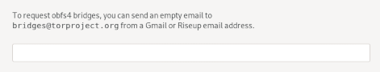
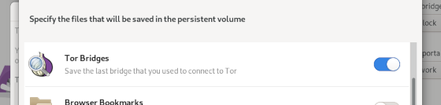
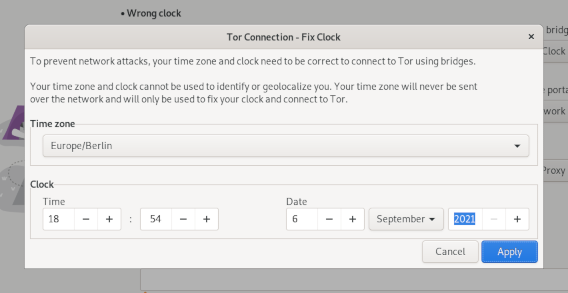

In Tails 4.22, we focused on solving the most important issues in the Tor Connection assistant to make it more robust and easier to use.
Changes and updates
Included software and hardware support
Update Tor Browser to 10.5.6.
Update Thunderbird to 78.13.
Update the AMD graphics firmware to 20210818. This should improve the support for some AMD graphics cards.
Tor Connection
Change the custom bridge interface to only allow entering 1 bridge. (#18550)
People had troubles knowing how to enter their custom bridges when the widget was a textarea and only the first bridge is used anyway.

Allow saving 1 custom bridge in the Persistent Storage. (#5461)

Allow fixing the clock manually when connecting to Tor using bridges fails. (#15548)
This helps people East from London connect to Tor using obfs4 bridges and makes connecting to Tor more robust in general.

Reduce the timeout that determines whether we can connect to Tor at all from 30 seconds to 10 seconds. Increase the timeout to start Tor entirely from 120 seconds to 600 seconds. (#18501).
Tor Connection now fails quicker when it's impossible to connect to Tor, while being more robust on slow Internet connections.
Allow trying again to connect to Tor from the error screen. (#18539)
Unsafe Browser
Stop restarting Tor when exiting the Unsafe Browser. (#18562)
Only mention the Persistent Storage in the Unsafe Browser warning when there is already a Persistent Storage. (#18551)
Others
Make sure that automatic upgrades are downloaded from a working mirror. (#15755)
Add Russian to the offline documentation included in Tails.
Fixed problems
Tor Connection
Fix connecting to Tor using the default bridges. (#18462)
Fix connecting to Tor when the Wi-Fi settings are saved in the Persistent Storage. (#18532)
Stop trying to connect to Tor in the background when Tor Connection reaches the error screen. (#18740)
For more details, read our changelog.
Known issues
None specific to this release.
See the list of long-standing issues.
Get Tails 4.22
To upgrade your Tails USB stick and keep your persistent storage
Automatic upgrades are broken from Tails 4.14 and earlier.
Follow our instructions to do an automatic upgrade from Tails 4.15, Tails 4.16, Tails 4.17, or Tails 4.18.
Automatic upgrades are available from Tails 4.19 or later to 4.22.
You can reduce the size of the download of future automatic upgrades by doing a manual upgrade to the latest version.
If you cannot do an automatic upgrade or if Tails fails to start after an automatic upgrade, please try to do a manual upgrade.
To install Tails on a new USB stick
Follow our installation instructions:
The Persistent Storage on the USB stick will be lost if you install instead of upgrading.
To download only
If you don't need installation or upgrade instructions, you can download Tails 4.22 directly:
What's coming up?
Tails 4.23 is scheduled for October 5.
Have a look at our roadmap to see where we are heading to.